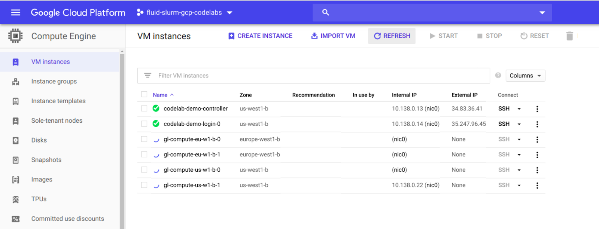

Last Updated: 2021-07-26
In this article, we assume that you have already completed the "Create a Research Computing Cluster on Google Cloud" codelab and have an existing fluid-slurm-gcp cluster.
Some applications and algorithms in high performance computing exhibit near perfect weak scaling. In this case, compute processes are independent and require no inter-communication or synchronization. This is typical of workflows where a large number of serial or multi-threaded applications are launched to independently process data (e.g. images and video, numerical simulation output, environmental data). This type of work is also known as high throughput computing (HTC).
For some HTC workloads, you may find yourself needing to pool resources across multiple GCP regions to keep pace with data inflow rates. Additionally, having compute resources available across multiple regions further protects you from interruptions caused by service failures that can occur in a single GCP zone or region.
In this introductory section of the codelab, we will cover the basics of GCP regions and zones. We'll then use this information to design a compute partition configuration that is globally scalable. In the following sections, we will walk you through implementing this globally scalable design with fluid-slurm-gcp.
Google Cloud Platform (GCP) offers on-demand access to compute, storage, and networking resources worldwide. A region is a specific geographical location where you can host your resources. Each region has one or more zones that correspond to distinct data-centers in that geographical location. As an example, europe-west1-a and europe-west1-b are two different zones in the europe-west1 region. Geographically, europe-west1 is located in St. Ghislain, Belgium.
From Google Cloud's Compute Engine documentation :
"Putting resources in different zones in a region provides isolation from most types of physical infrastructure and infrastructure software service failures. Putting resources in different regions provides an even higher degree of failure independence. This allows you to design robust systems with resources spread across different failure domains."
Virtual Private Cloud (VPC) networks provide connectivity between compute instances, GCP services, and 3rd party system. Subnetworks are regional resources. This means that, for each region you wish to deploy compute instances, you will need a subnetwork defined in that region. Traffic between subnetworks and on-premise systems is controlled by network firewall rules.
GCP projects come with a default network with pre-populated firewall rules and a subnetwork for each region.
Fluid-slurm-gcp provides a schema that you can use to describe what machines you want to use on GCP, which regions and zones to deploy them in, and what partitions in slurm to align them with. This allows you to have identical machines spread across multiple region in a single globally scalable compute partition.
This schematic provides an example of a fluid-slurm-gcp deployment in the us-west-1 and europe-west-1 regions (The Dalles, Oregon, USA and St. Ghislain, Belgium). The login and controller instances reside in a single zone of us-west-1.
The compute partition (called "globally-scalable") has two sets of machines : compute-us-w1-b-* and compute-eu-w1-b-*. Each machine set is deployed in their own subnetwork corresponding to the region they will be deployed to. In this configuration, users can submit jobs to the globally-scalable partition and the Slurm job scheduler will schedule jobs to run in any of these regions.
In this codelab, you are going to configure a globally scalable (multi-region) compute partition on an existing fluid-slurm-gcp HPC cluster on Google Cloud Platform.
Fluid Numerics' slurm-gcp comes with a command-line tool called cluster-services that is used to manage available compute nodes, compute partitions, Slurm user accounting, and network attached storage. You can update your cluster configuration by providing cluster-services a .yaml file that defines a valid cluster configuration. By default, cluster-services looks for a cluster configuration file in /apps/cls/etc/cluster-config.yaml . Alternatively, you can use cluster-services to report your current cluster configuration that you can then modify.
Modifying compute partitions must be done on the controller instance of your cluster with root privileges. This is required, since the Slurm controller daemon is restarted when partitions are modified to allow the changes to take effect.
In this section, you will use cluster-services to create a valid cluster configuration yaml that you will modify in the next section.
$ sudo su
[root]# cluster-services list all > config.yaml 1 compute_image: projects/fluid-cluster-ops/global/images/fluid-slurm-gcp-compute-centos-v2-3-0
2 compute_service_account: default
3 controller:
4 project: fluid-slurm-gcp-codelabs
5 region: us-west1
6 vpc_subnet: https://www.googleapis.com/compute/v1/projects/fluid-slurm-gcp-codelabs/regions/us-west1/subnetworks/default
7 zone: us-west1-b
8 controller_image: projects/fluid-cluster-ops/global/images/fluid-slurm-gcp-controller-centos-v2-3-0
9 controller_service_account: default
10 default_partition: partition-1
11 login:
12 - project: fluid-slurm-gcp-codelabs
13 region: us-west1
14 vpc_subnet: https://www.googleapis.com/compute/v1/projects/fluid-slurm-gcp-codelabs/regions/us-west1/subnetworks/default
15 zone: us-west1-b
16 login_image: projects/fluid-cluster-ops/global/images/fluid-slurm-gcp-login-centos-v2-3-0
17 login_service_account: default
18 mounts: []
19 munge_key: ''
20 name: fluid-slurm-gcp-1
21 partitions:
22 - labels:
23 goog-dm: fluid-slurm-gcp-1
24 machines:
25 - disable_hyperthreading: false
26 disk_size_gb: 15
27 disk_type: pd-standard
28 external_ip: false
29 gpu_count: 0
30 gpu_type: nvidia-tesla-v100
31 image: projects/fluid-cluster-ops/global/images/fluid-slurm-gcp-compute-centos-v2-3-0
32 local_ssd_mount_directory: /scratch
33 machine_type: n1-standard-2
34 max_node_count: 10
35 n_local_ssds: 0
36 name: partition-1
37 preemptible_bursting: false
38 static_node_count: 0
39 vpc_subnet: https://www.googleapis.com/compute/v1/projects/fluid-slurm-gcp-codelabs/regions/us-west1/subnetworks/default
40 zone: us-west1-b
41 max_time: INFINITE
42 name: partition-1
43 project: fluid-slurm-gcp-codelabs
44 slurm_accounts: []
45 slurm_db_host: {}
46 suspend_time: 300
47 tags:
48 - defaultThe partitions definition, in this cluster-configuration file, is specified between lines 21-43. The partitions attribute is a list of objects. Each partitions object has the attributes labels, machines, max_time, name, and project.
The partitions.machines attribute is also a list of objects. Each partitions.machines attribute defines a set of machines that you want to place in the Slurm partition defined by the parent partitions object. Take some time to review the partitions object schema before moving onto the next section.
At this point, you now have a configuration file, config.yaml, in your home directory. You will now add one more machine set to the first partitions object that define identical machine types in different regions.
By the end of this section, you will have a globally scalable, multi-region compute partition. We walk you through building compute partitions that open access to any Google data-center worldwide.
First, use cluster-services to make the changes to your HPC cluster configuration. We will build from the config.yaml file created in the previous section.
globally-scalable 42 name: globally-scalablecompute-w1-b 36 name: gl-compute-us-w1-bmachines block in the first-partition specification (lines 25-40) and paste below line 40.machines block zone to europe-west1-b, vpc_subnet to https://www.googleapis.com/compute/v1/projects/[PROJECT-ID]/regions/europe-west1/subnetworks/default, and name to gl-compute-eu-w1-b. After completing this step, your machines block should look like the following:
25 - disable_hyperthreading: false
26 disk_size_gb: 15
27 disk_type: pd-standard
28 external_ip: false
29 gpu_count: 0
30 gpu_type: nvidia-tesla-v100
31 image: projects/fluid-cluster-ops/global/images/fluid-slurm-gcp-compute-centos-v2-3-0
32 local_ssd_mount_directory: /scratch
33 machine_type: n1-standard-2
34 max_node_count: 2
35 n_local_ssds: 0
36 name: gl-compute-us-w1-b
37 preemptible_bursting: false
38 static_node_count: 0
39 vpc_subnet: https://www.googleapis.com/compute/v1/projects/fluid-slurm-gcp-codelabs/regions/us-west1/subnetworks/default
40 zone: us-west1-b
41 - disable_hyperthreading: false
42 disk_size_gb: 15
43 disk_type: pd-standard
44 external_ip: false
45 gpu_count: 0
46 gpu_type: nvidia-tesla-v100
47 image: projects/fluid-cluster-ops/global/images/fluid-slurm-gcp-compute-centos-v2-3-0
48 local_ssd_mount_directory: /scratch
49 machine_type: n1-standard-2
50 max_node_count: 2
51 n_local_ssds: 0
52 name: gl-compute-eu-w1-b
53 preemptible_bursting: false
54 static_node_count: 0
55 vpc_subnet: https://www.googleapis.com/compute/v1/projects/fluid-slurm-gcp-codelabs/regions/europe-west1/subnetworks/default
56 zone: europe-west1-bconfig.yaml and return to the terminal. cluster-services to update your cluster-configuration[root]# cluster-services update partitions --config=config.yaml --preview
~ default_partition = partition-1 -> globally-scalable
~ partitions[0].machines[0].name = partition-1 -> gl-compute-us-w1-b
~ partitions[0].machines[0].zone = us-west1-c -> us-west1-b
+ partitions[0].machines[1] = {'disable_hyperthreading': False, 'disk_size_gb': 15, 'disk_type': 'pd-standard', 'external_ip': False, 'gpu_count': 0, 'gpu_type': 'nvidia-tesla-v100', 'image': 'projects/fluid-cluster-ops/global/images/fluid-slurm-gcp-compute-centos-v2-3-0', 'local_ssd_mount_directory': '/scratch', 'machine_type': 'n1-standard-2', 'max_node_count': 2, 'n_local_ssds': 0, 'name': 'gl-compute-eu-w1-b', 'preemptible_bursting': False, 'static_node_count': 0, 'vpc_subnet': 'https://www.googleapis.com/compute/v1/projects/fluid-shared-vpc-networking/regions/us-west1/subnetworks/fluid-cluster-subnet-usw1', 'zone': 'europe-west1-b'}
[root]# cluster-services update partitions --config=config.yaml[root]# sinfo
PARTITION AVAIL TIMELIMIT NODES STATE NODELIST
globally-scalable up infinite 4 idle~ gl-compute-us-w1-b-[0-1],gl-compute-eu-w1-b-[0-1]In the last section, you added machines in us-west1-b and europe-west1-b to be available in a Slurm partition. We will now submit a test job that demonstrates that both regions are used in this configuration.
srun to submit a job-step across all 4 nodes in the globally-scalable partition. $ srun -N4 --partition=globally-scalable hostname
gl-compute-us-w1-b-1
gl-compute-us-w1-b-0
gl-compute-eu-w1-b-1
gl-compute-eu-w1-b-0It can take anywhere from 1-3 minutes for the nodes to respond with the hostname. When communicating between GCP regions, there is increased network latency between instances. If you monitor the Compute Engine UI, you will be able to see the compute nodes becoming live in us-west1-b (The Dalles, Oregon, USA) and europe-west1-b (St. Ghislain, Belgium)

Congratulations! You have just created and tested a globally scalable HPC computing partition on Google Cloud Platform!
In this codelab, you
Learn how to configure a high availability compute partition (multi-zone)
Submit your feedback and request new codelabs using our feedback form
Learn how to configure OS-Login to ssh to your cluster with 3rd party ssh tools
Learn how to manage POSIX user information with the directory API